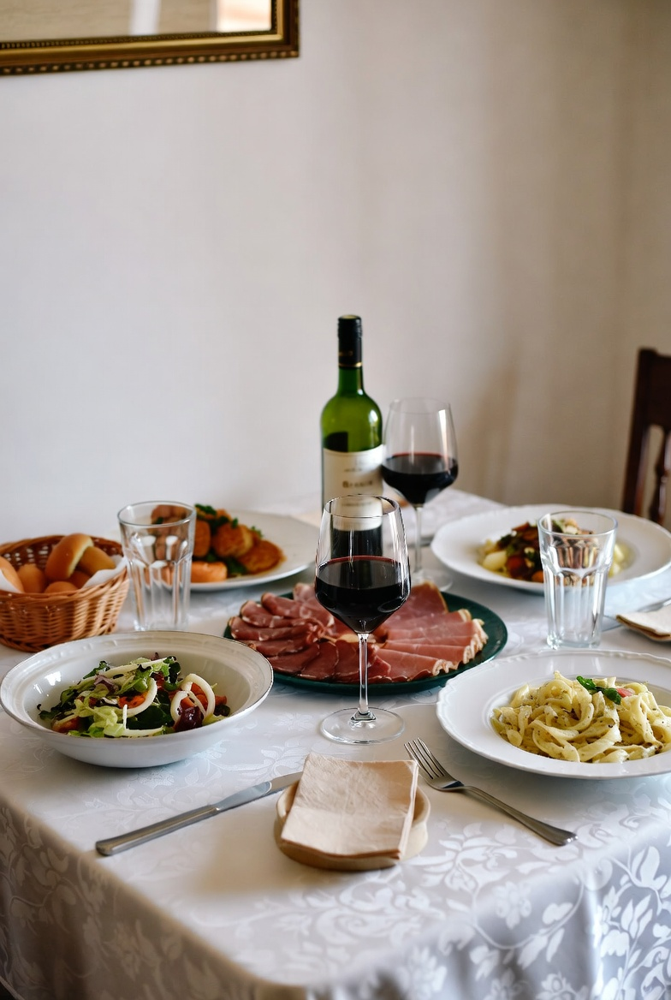

Supper Recipes

Garlic Herb Chicken with Roasted Vegetables
Ingredients:
- 2 boneless, skinless chicken breasts
- 2 tablespoons olive oil
- 2 cloves garlic, minced
- 1 teaspoon dried thyme
- 1 teaspoon dried rosemary
- 1/2 teaspoon salt
- 1/2 teaspoon black pepper
- 1 cup broccoli florets
- 1 cup sliced carrots
- 1 cup diced potatoes
Instructions:
- Preheat the oven to 400°F (200°C).
- In a small bowl, mix olive oil, garlic, thyme, rosemary, salt, and pepper.
- Place the chicken breasts on a baking sheet and brush with the garlic herb mixture.
- Arrange broccoli, carrots, and potatoes around the chicken.
- Drizzle remaining olive oil mixture over the vegetables.
- Bake for 25–30 minutes or until the chicken reaches an internal temperature of 165°F (74°C).
- Remove from oven and let rest for 5 minutes before serving.